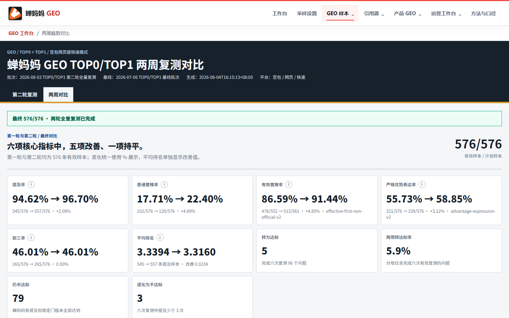

跳到路演内容
2026 AI 创新实践路演
GEO综合
分析平台
把一次 AI 回答分析，变成可配置、可恢复、可验证、可交付的工作系统
汇报人郭文屹项目成员钟件华团队增长投放部
01 / WHY
为什么开始做 GEO
我需要回答的，不只是“有没有被提到”，而是一组可以持续验证的业务问题。
- 01蝉妈妈是否出现在回答里？品牌可见性
- 02出现时排在什么位置？排序与优势表达
- 03回答最终引用了谁？内容供给与来源
项目问题定义，不代表全网绝对份额
02 / 背景
GEO 项目难的不是开始，而是过程不受我们掌控
问题、平台、次数和预算分散；采样、回收与补采不可见；分析、仪表盘与交接彼此脱节。
配置分散每次确认都依赖人工核对范围和口径容易混淆。执行不可见中断后不知道该从哪里继续完成、缺口和 unknown 没有被区分。结果难交付数字无法自然进入下一步动作结果、引用与验收难以复用。 03 / 我是谁
我是由 Codex 搭建的 GEO综合分析平台
我不是一个单独的网页，而是一套可追溯的采样、分析、仪表盘、质检与发布系统，目前已覆盖四个项目组、12 个 GEO 入口与分析视图。
输入业务事实、问题池、目标平台与指标一次确认，形成清楚的任务边界。过程采样、回收、补采与分析进度、缺口与暂停恢复始终可见。输出采样仪表盘、引用源仪表盘与交接回执结果与后续动作分别留痕。 04 / 我能做什么
把提问、采样、判定、引用追踪与交付串成完整流程
01问题与采样把关键词与官方事实转为业务场景问题，按审核题单分批采样。02品牌判定识别提及、首推、前三、第三方首位、优势表达、排名与缺口。03引用源分析规范化 URL，分析平台、域名、账号、内容类型和轮次差异。04仪表盘与质检生成响应式仪表盘，完成哈希校验、浏览器 QA 与授权后发布。05 / CITATION SUPPLY
回答背后，还有一层内容供给
提及解决“有没有”，引用源分析继续回答“模型依据了什么”。
这让内容建设从泛泛而谈，转向可核验的来源、页面与覆盖问题。
9,936去重引用事件
2,355唯一 URL
95.8%抖音问题覆盖
22.6%抖音事件占比
数据源：豆包引用源分析报告 · 截至 2026-07-15
06 / EFFECT
成果的价值，是让判断开始有依据
01从直觉讨论变成可追溯判断
02从一次性看板变成连续复测
03从品牌提及延伸到引用供给
它没有替代经营判断，但让每次讨论都能回到日期、样本、来源与口径。
07 / 产品迭代
从本地执行，到可恢复的 GEO 工作系统
每一次迭代都解决一个真实的执行断点：先写清任务，再让过程可见，最后让结果可交付。
起点本地执行每次以任务说明明确范围、明细、口径、异常与交付。第一步MVP1.0将长提示词收敛为范围、明细、分析口径、质量检查与交付五段运行契约。第二步MVP2.0加入采样、回收、补采与证据归档，保留 153 采样 / 87 回收 / 503 引用 与 PARTIAL 状态。当前MVP3.0配置、执行、分析三界面分离；支持检查点、恢复、双仪表盘与多视口 QA。 从“写一段提示词”到“完成一次可追溯的业务交付”范围清楚 · 过程可见 · 缺口保留 · 结果可验
08 / 真实流程演示 · 45–60 SEC
配置确认、自动推进、暂停恢复、补采、分析交付
现场按同一顺序播放真实流程录像；本地页面保留同流程的备用演示。
- 1确认槽位、回收规则与指标卡
- 2采样与回收进度同步呈现
- 3暂停后从原进度继续
- 4缺口样本独立补采
- 5生成双仪表盘与交接回执
打开本地流程演示 ↗本地流程演示 · 外部提交 0 · 实际费用 0本地流程演示

我的效果如何

蝉妈妈 BI 两轮采样仪表盘历史已验证两轮结果 · 每轮 576 个有效样本10 / 知识储备与 Skill
把项目经验沉淀为下一次可复用的方法
业务规则、样本证据、运行边界与工程能力共同构成可回查的项目资产。
范围与规格从需求中收敛边界、规则、异常和验收。工程与恢复以检查点、幂等与回归验证保证过程可恢复。数据与调试用证据、日志与复算定位问题而非凭印象判断。浏览器验证核查 DOM、交互、资源、性能与不同屏幕尺寸。产品设计把复杂流程组织为第一次使用也能理解的界面。自动化执行在授权边界内串联重复、可审计的操作步骤。 汇报人：郭文屹项目成员：钟件华增长投放部